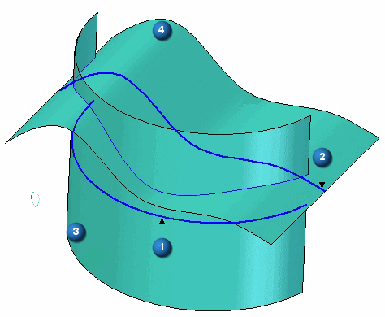
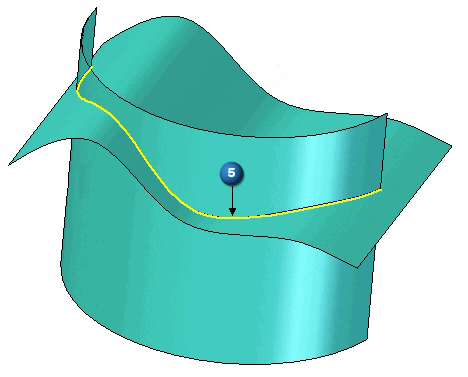

Cross Curve command
Use the Cross Curve command  to create a 3-D curve at the intersection of two curves.
to create a 3-D curve at the intersection of two curves.
-
The command works much like the Intersection Curve command, yet it does not need existing surfaces to create a curve.
-
The only input required is two curves/analytics or a combination of the two.
-
An intersection curve is created with the theoretical extruded surfaces resulting from the two input curves or analytics.
(1) and (2) are the input curves. (3) and (4) are the theoretical extruded surfaces. (5) is the resultant cross curve.

